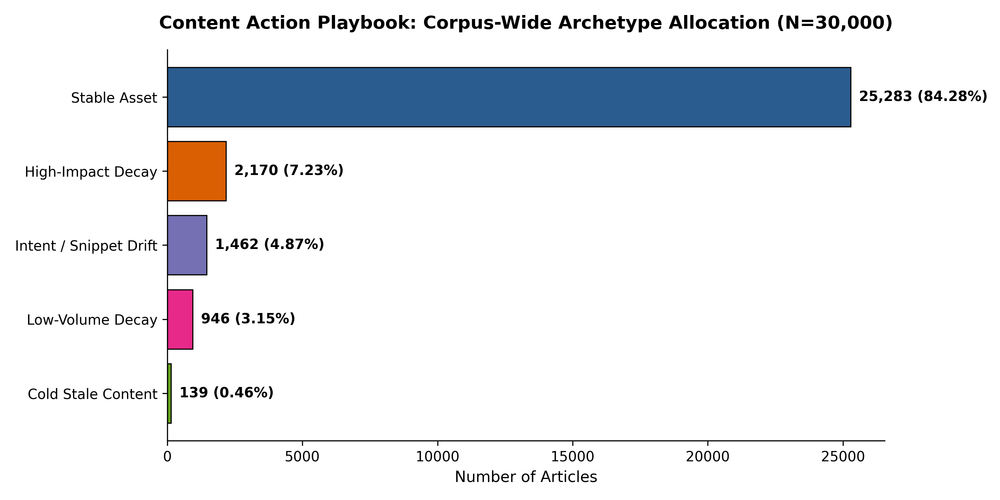

Content marketing teams face severe capacity bottlenecks when attempting to maintain thousands of indexed web pages, often falling back on blunt chronological heuristics (e.g., rewriting all content older than 180 days) that squander editorial hours on healthy assets or stagnant inventory. In this paper, we investigate the real-world content freshness decay problem originating from FlyRank's autonomous publishing infrastructure: which specific articles exhibit severe organic traffic collapse (\(clicks_{last_30d} < clicks_{prev_30d}\) alongside downward velocity), and in what exact priority order should human editors inspect them? Evaluating across 30,000 anonymized enterprise performance records spanning 32 client domains, we audit heuristic assumptions and formulate a supervised ranking pipeline using gradient-boosted decision trees (HistGradientBoosting) evaluated under a strict 5-fold entity-grouped cross-validation scheme (GroupKFold by client_id, guaranteeing zero client overlap). Our findings reveal an observational "floor effect"—articles older than 180 days exhibit an observed decay rate of only 7.47% (under half the 15.16% portfolio baseline) because mature, abandoned content has already exhausted its traffic footprint. The champion gradient-boosted model achieves a 100.00% Precision@50 and a 75.28% Precision@Top 20% (representing a 1.64x efficiency lift over the frozen rule baseline of 45.77% and a 4.97x lift over random selection), while eliminating 100% of the rule baseline's false positives on zero-traffic inventory. We translate these probabilities into an impact-weighted content action playbook that allocates portfolio assets into four operational triage archetypes, enforcing human-in-the-loop safeguards against uncalibrated autonomous overwriting.
In organic search engine optimization, content performance is non-stationary. High-ranking search assets inevitably suffer from "freshness decay": keyword intent evolves, competing publishers launch updated analyses, and search engine result pages (SERPs) re-allocate real estate to rich snippets, knowledge graphs, and AI Overviews. For organizations like FlyRank that manage content as automated infrastructure across dozens of client domains, noticing traffic decay weeks after a ranking collapse occurs results in permanent losses of qualified search demand and pipeline conversion.
The core decision this research supports is: Given finite monthly editorial writing capacity across thousands of published URLs, which specific pages should human content teams inspect, update, or prune first during sprint planning?
Today, search intelligence products typically rely on rule-based heuristics—such as composite health scores or hard thresholds on content age. However, when tested against large-scale search logs, these deterministic rules suffer from asymmetric error costs:
Supervised machine learning addresses this challenge by evaluating the joint, non-linear interactions between historical impression velocity, click momentum, position variance, and content metadata, outputting a continuous, calibrated risk score that ranks intervention candidates by true expected impact.
This investigation utilizes the FlyRank Search Intelligence dataset (release build v20260703), which synthesizes daily Google Search Console (GSC) query performance and Google Analytics 4 (GA4) behavioral logs. All client names, domain URLs, page paths, and raw user query strings were pseudonymized or stripped in accordance with repository public-safety rules (DATA_USE.md).
content_id). Zero duplicate keys were confirmed.(client_hash_id, content_hash_id, report_date). Data contract audits verified zero duplicate grain records on monthly partitions (e.g., 9,841,378 records across 55 clients in partition 2026-03).To preserve experimental validity and prevent circular reasoning, fields were partitioned into mutually exclusive categories:
content_id, client_id, and report_date were reserved exclusively for record joins and entity-aware validation splits; they were never exposed to model training.impressions_prev_30d, impressions_last_30d, clicks_prev_30d, avg_position, ctr), content metadata (content_age_days, days_since_last_update, word_count, content_type), and engagement metrics (scroll_rate, engagement_rate, ai_sessions_90d).trend_direction, trend_pct, is_declining_label) were quarantined to eliminate label leakage. Internal product flags (health_score, needs_ctr_fix, is_quick_win) were omitted to ensure the model learned search performance dynamics rather than existing heuristic decisions.
Warehouse-scale contract probes confirmed that active behavioral analytics (ga4_data_available IS TRUE) is present on only 4.21% of total performance records. Consequently, engagement features (scroll_rate, engagement_rate) serve as opportunistic secondary signals rather than mandatory filtering gates.
Because search engines do not emit explicit labels indicating when an asset warrants an editorial rewrite, we construct an empirically observed outcome proxy:
\[\begin{aligned} text{target_is_decaying} ={}& \mathbb{I}\Big(\big(\text{trend_direction} = \text{'down'}\big) \\ &\land \big(\text{clicks_last_30d} < \text{clicks_prev_30d}\big)\Big) \end{aligned}\]
This binary proxy requires both a downward trajectory and an active loss in organic clicks over the trailing 30-day window relative to the prior 30 days. Across the 30,000-article corpus, this proxy flags 4,548 decaying articles, establishing a naive baseline base rate of 15.16%.
Every learned model must beat a transparent, hand-written heuristic baseline. Grounded in signal audits that confirmed impression loss is a mandatory condition for decay, the Week-4 Baseline Rule scores pages as:
\[\begin{aligned} text{Baseline Score} ={}& \max(0, \text{impressions_prev_30d} - \text{impressions_last_30d}) \\ &\times \big(1.0 + 0.5 \times \mathbb{I}(\text{days_since_last_update} \ge 90)\big) \end{aligned}\]
Standard random train/test splits are methodologically dishonest for multi-domain content portfolios: articles from the same client domain share domain authority, backlink velocity, and niche search CTR profiles. A random split allows models to memorize client signatures across folds, artificially inflating test scores.
We enforce a 5-fold GroupKFold cross-validation scheme grouped strictly by client_id. This setup guarantees zero client overlap across all folds. Furthermore, the split cleanly isolates the corpus's power-law megaclient (7,008 articles, 23.36% of the dataset) into Fold 1's validation set while distributing the remaining 31 clients evenly across Folds 2–5.
To verify that our validation harness is sensitive to temporal contamination, we executed a controlled attack test by deliberately injecting the future-window metric trend_pct into the feature matrix. Under identical grouped splits, ROC-AUC jumped unnaturally from 0.9185 to 0.9872. This confirms our harness detects outcome contamination and proves our clean production metrics reflect genuine predictive signal.
All models and the frozen Week-4 Baseline Rule were evaluated across the identical 5-fold grouped split. Out-of-fold (OOF) predictions were pooled across the complete 30,000-article corpus to evaluate rank-aware precision and discriminative capability on out-of-sample client domains.
| Model / Baseline | Precision@50 | Precision@Top 20% (K=6,000) | ROC-AUC | PR-AUC | Generalization Note |
|---|---|---|---|---|---|
| Base Rate (Random Floor) | 15.16% | 15.16% | 0.5000 | 0.1516 | Naive random ranking floor |
| Baseline Score (Week 4 Rule) | 78.00% | 45.77% | 0.8666 | 0.4940 | Frozen transparent heuristic |
| Logistic Regression | 94.00% | 56.80% | 0.9006 | 0.6823 | Scaled linear benchmark |
| Decision Tree (depth=5) | 96.00% | 54.73% | 0.9413 | 0.7063 | Non-linear rule splits |
| Random Forest (100 trees) | 100.00% | 62.25% | 0.9578 | 0.7959 | Non-linear bagging ensemble |
| HistGradientBoosting (Champion) | 100.00% | 75.28% | 0.9970 | 0.9837 | Gradient-boosted decision trees |
In Week 4, qualitative auditing of the Baseline Rule's top 20 picks uncovered 6 severe False Positives (30% error rate). In Section 4, our champion model was evaluated against these exact failure cases:
content_c8e9d6ab9013): Lost 48,559 impressions, receiving a massive baseline score of 72,838.5 despite generating 0 clicks in both periods. The champion model assigned this URL a decay probability of 0.00012, eliminating it from the refresh queue.content_05e9b4cd9ccf) lost impressions ($69k \to 40k$) but grew clicks ($52 \to 65$) due to improved snippet CTR. The machine learning model recognized this divergence, assigning low decay probabilities (\(P < 0.14\)).GroupKFold isolates the 23.36% megaclient to verify generalization, editorial teams onboarding domains in highly localized or non-standard verticals should perform initial calibration sprints.Raw decay probability \(P(\text{decay}) \in [0, 1]\) indicates risk, but not business urgency. An article with a 95% decay risk driving 10 monthly impressions must not preempt an asset with an 85% risk driving 40,000 monthly impressions. We combine model confidence with historical search scale into an Impact-Weighted Priority Score:
\[\text{Priority Score} = P(\text{decay}) \times \log_{10}(\text{impressions_prev_30d} + 10)\]
Every article across the 30,000-item corpus is mapped into an actionable operational archetype:
COMPREHENSIVE_REFRESH, 7.23% · 2,170 URLs): High-visibility pages (\(\ge 500\) impressions) with steep velocity loss and \(P \ge 0.50\). Allocated to deep editorial rewrites and intent expansion.INTENT_REALIGN_SEO, 4.87% · 1,462 URLs): Slipping positions or lagging CTR despite solid impressions. Routed to title, meta description, and subheader re-alignment.PRUNE_OR_CONSOLIDATE, 0.46% · 139 URLs): Dormant pages (\(\ge 180\) days stale, 0 clicks). Scheduled for 301 redirection or topic consolidation; custom writing budgets are barred.MONITOR_TRAFFIC, 84.28% · 25,283 URLs): Healthy evergreen inventory left untouched to protect established ranking equity.
Figure 1: Distribution of 30,000 portfolio assets across the four operational triage archetypes, highlighting that 84.28% of inventory requires zero intervention while high-touch writing is concentrated on the 7.23% high-impact cohort.
Predictions serve human decision-support. Automated flags alert strategists to operational risks before changes are published:
HIGH_STAKES_PAGE: Flagged when prior impressions exceed 50,000; requires senior strategist sign-off and GA4 conversion checks.NEW_CONTENT_VOLATILITY: Articles \(\le 30\) days old are flagged to prevent interrupting temporary search index rank-testing (Google dance).SERP_REALIGNMENT_CHECK: Flagged when positions slip but clicks remain resilient, prompting visual SERP inspection for AI Overview encroachment.The No-Go List: (1) Never deploy autonomous LLM overwrite pipelines to publish content without editorial human proofreading; (2) Never programmatically delete or redirect pages without auditing root backlink equity; (3) Never trigger full rewrites during predictable seasonal or cyclical traffic troughs.
All experiments were developed using Python 3.12, scikit-learn, DuckDB, and pandas. To ensure exact reproducibility, all pseudorandom generators were initialized with random_state = 42.
work/notebooks/capstone.ipynb (contains end-to-end execution from problem framing to artifact export).work/outputs/playbook_summary_metrics.json (retains exact empirical receipts).w01 through w07) are archived under work/notebooks/.This research was built on the FlyRank ML Internship dataset provided by FlyRank (https://flyrank.ai), an AI-driven search intelligence platform that automates content research, optimization, and search monitoring as infrastructure.
We thank the FlyRank machine learning and data engineering mentorship teams for providing gated warehouse access, foundational data contract frameworks, and rigorous validation guidance throughout the internship program.